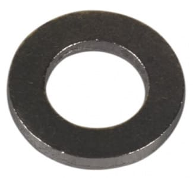

ISO 7089 Шайба плоская
Стандарт
DIN 93
ISO
ISO 7089
Цена от
0,18 ₽
Размерный ряд
: от М1 до М90
Шайбы металлические, кольца » ISO 7089 Шайбы плоские без фаски класса точности А
Варианты и размеры (40)
| Наименование | Размер | Длина, мм | Материал | Покрытие | Цена |
|---|---|---|---|---|---|
| ISO 7089 Шайба плоская M1 L=3мм | M1 | 3 | 0,10 ₽ | ||
| ISO 7089 Шайба плоская M1.2 L=2мм | M1.2 | 2 | 0,10 ₽ | ||
| ISO 7089 Шайба плоская M1.4 L=4мм | M1.4 | 4 | 0,10 ₽ | ||
| ISO 7089 Шайба плоская M1.6 L=6мм | M1.6 | 6 | 0,11 ₽ | ||
| ISO 7089 Шайба плоская M1.8 L=8мм | M1.8 | 8 | 0,11 ₽ | ||
| ISO 7089 Шайба плоская M10 L=5мм | M10 | 5 | 0,22 ₽ | ||
| ISO 7089 Шайба плоская M12 L=13мм | M12 | 13 | 0,28 ₽ | ||
| ISO 7089 Шайба плоская M14 L=15мм | M14 | 15 | 0,32 ₽ | ||
| ISO 7089 Шайба плоская M16 L=17мм | M16 | 17 | 0,36 ₽ | ||
| ISO 7089 Шайба плоская M18 L=19мм | M18 | 19 | 0,40 ₽ | ||
| ISO 7089 Шайба плоская M2 L=5мм | M2 | 5 | 0,11 ₽ | ||
| ISO 7089 Шайба плоская M2.2 L=4мм | M2.2 | 4 | 0,11 ₽ | ||
| ISO 7089 Шайба плоская M2.5 L=5мм | M2.5 | 5 | 0,12 ₽ | ||
| ISO 7089 Шайба плоская M20 L=21мм | M20 | 21 | 0,45 ₽ | ||
| ISO 7089 Шайба плоская M22 L=23мм | M22 | 23 | 0,50 ₽ | ||
| ISO 7089 Шайба плоская M24 L=25мм | M24 | 25 | 0,55 ₽ | ||
| ISO 7089 Шайба плоская M27 L=28мм | M27 | 28 | 0,62 ₽ | ||
| ISO 7089 Шайба плоская M3 L=2мм | M3 | 2 | 0,12 ₽ | ||
| ISO 7089 Шайба плоская M3.5 L=5мм | M3.5 | 5 | 0,13 ₽ | ||
| ISO 7089 Шайба плоская M30 L=31мм | M30 | 31 | 0,70 ₽ | ||
| ISO 7089 Шайба плоская M33 L=34мм | M33 | 34 | 0,79 ₽ | ||
| ISO 7089 Шайба плоская M36 L=37мм | M36 | 37 | 0,88 ₽ | ||
| ISO 7089 Шайба плоская M39 L=42мм | M39 | 42 | 0,99 ₽ | ||
| ISO 7089 Шайба плоская M4 L=3мм | M4 | 3 | 0,13 ₽ | ||
| ISO 7089 Шайба плоская M42 L=45мм | M42 | 45 | 1,10 ₽ | ||
| ISO 7089 Шайба плоская M45 L=48мм | M45 | 48 | 1,20 ₽ | ||
| ISO 7089 Шайба плоская M48 L=52мм | M48 | 52 | 1,30 ₽ | ||
| ISO 7089 Шайба плоская M5 L=3мм | M5 | 3 | 0,15 ₽ | ||
| ISO 7089 Шайба плоская M52 L=56мм | M52 | 56 | 1,50 ₽ | ||
| ISO 7089 Шайба плоская M56 L=62мм | M56 | 62 | 1,60 ₽ | ||
| ISO 7089 Шайба плоская M6 L=4мм | M6 | 4 | 0,16 ₽ | ||
| ISO 7089 Шайба плоская M60 L=66мм | M60 | 66 | 1,80 ₽ | ||
| ISO 7089 Шайба плоская M64 L=70мм | M64 | 70 | 2,00 ₽ | ||
| ISO 7089 Шайба плоская M68 L=74мм | M68 | 74 | 2,20 ₽ | ||
| ISO 7089 Шайба плоская M7 L=4мм | M7 | 4 | 0,18 ₽ | ||
| ISO 7089 Шайба плоская M72 L=78мм | M72 | 78 | 2,40 ₽ | ||
| ISO 7089 Шайба плоская M76 L=82мм | M76 | 82 | 2,50 ₽ | ||
| ISO 7089 Шайба плоская M8 L=4мм | M8 | 4 | 0,19 ₽ | ||
| ISO 7089 Шайба плоская M80 L=86мм | M80 | 86 | 2,70 ₽ | ||
| ISO 7089 Шайба плоская M90 L=96мм | M90 | 96 | 3,30 ₽ |